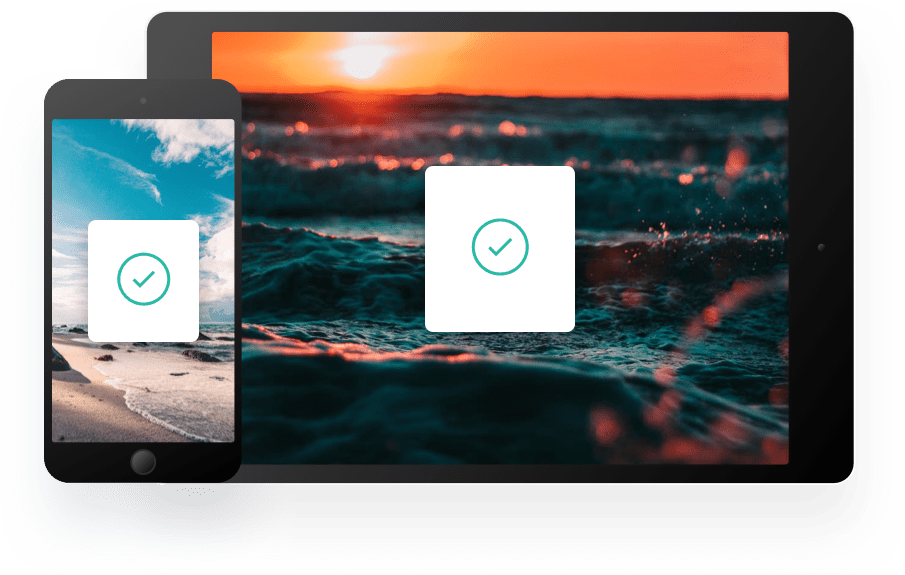

Keep track of your snippets
Clipboard instantly stores any item you copy in the cloud, meaning you can access your snippets immediately on all your devices. Our Mac and iOS apps will help you organize everything.

Access Clipboard anywhere
Whether you're on the go, or at your computer, you can access all your Clipboard snippets in a few simple clicks.

Supercharge your workflow
We've got the tools to boost your productivity.
Clipboard for iOS and Mac OS
Available for free on the App Store. Download for Mac or iOS, sync with iCloud and you're ready to start adding to your clipboard.